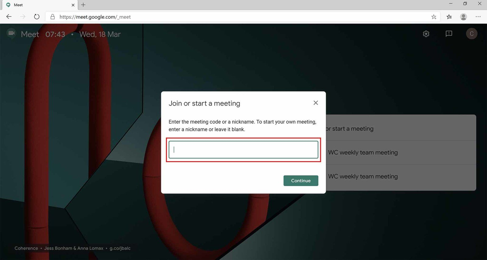
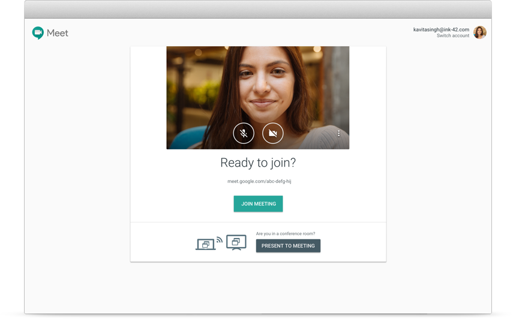
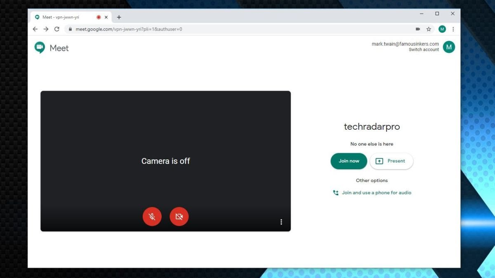
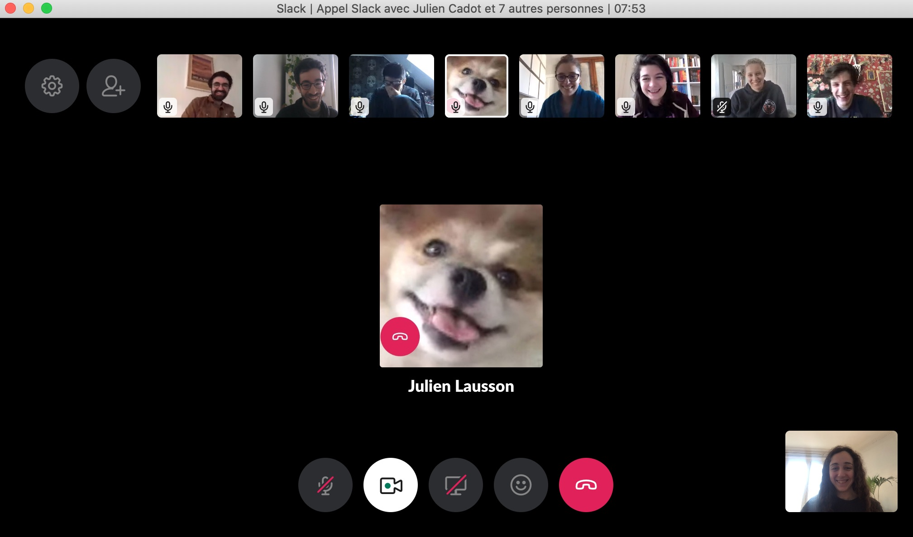
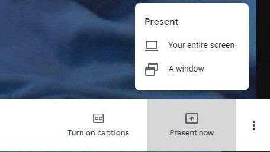
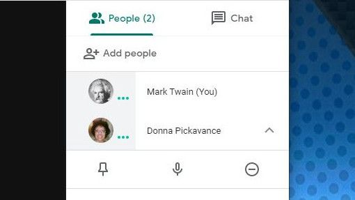
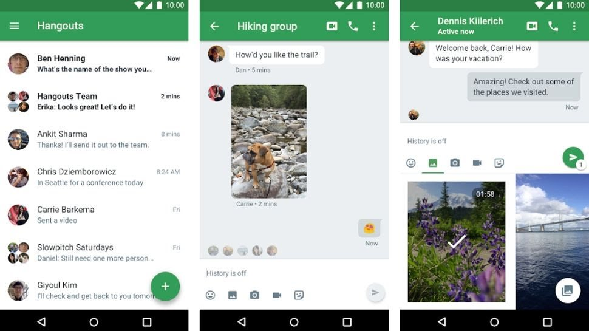
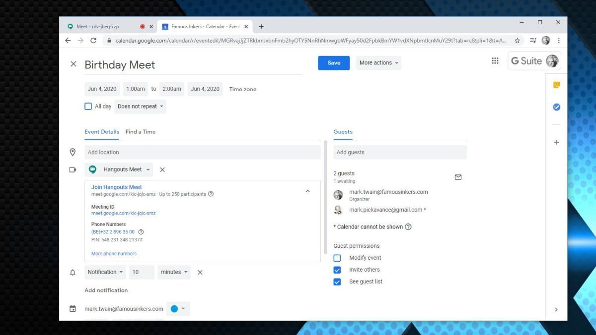
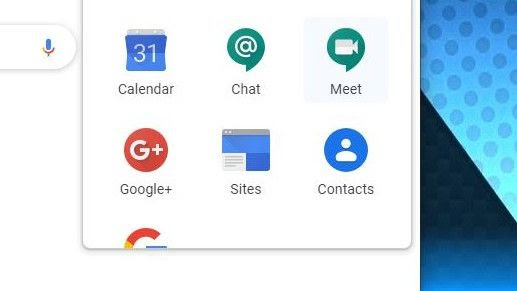

Commen utiliser Google Meet
Soyez avec les autres tout en étant loin, très loin.
C'est un mystère pour nous, mais les grandes opérations logicielles comme Google et Microsoft aiment renommer les produits et fusionner ou diverger plusieurs solutions en de nouvelles tout le temps. Par conséquent, pour clarifier dès le départ, Google Meet (ou Google Hangouts Meet) contient une technologie très similaire à Hangouts, avec quelques différences favorables aux entreprises. Il semble que Google ait l'intention de modifier les Hangouts et de passer à une combinaison de Meet and Chat, mais il est toujours disponible actuellement. Si vous utilisez Hangouts pour la visioconférence et que vous disposez d'un compte compatible G-Suite, vous souhaiterez peut-être prendre de l'avance sur cette courbe et comprendre Google Meet maintenant, avec notre guide pratique.
Pour démarrer une session avec Google Meet, dans votre navigateur, rendez-vous simplement sur cette page: https://meet.google.com/. Et, si vous avez un compte Google, vous pouvez vous connecter et accéder à l'interface Meet. La version complète de Meet est uniquement disponible pour ceux qui ont un compte G-Suite. Bien que toute personne possédant un compte Google puisse rejoindre une réunion, elle ne peut tout simplement pas en organiser une. Meet est également inclus par défaut dans le panneau des applications Google Chrome si vous avez G-Suite. Pour ceux qui utilisent un appareil mobile et non un ordinateur, une application est disponible pour les téléphones et tablettes Android et iOS, et nous expliquerons également comment l'utiliser à une étape ultérieure.

Démarrer ou rejoindre une rencontre
Après avoir lancé Meet, vous êtes présenté avec un panneau cliquable qui a la possibilité de «rejoindre ou démarrer une réunion». Dans la même section de l'écran, il affichera également toutes les réunions que vous avez précédemment planifiées dans Google Agenda. Pour rejoindre une réunion, vous devrez connaître le nom de cette réunion et, dans notre exemple, nous avons créé une réunion appelée Tech Radar Pro et cliqué sur «Continuer» pour participer.

Soyez un présentateur
Si la réunion à laquelle nous avons essayé de participer n'existait pas ou si nous étions la seule personne, Meet supposerait que nous voulions créer une nouvelle réunion et donne également la possibilité de «présenter». En tant que présentateur, vous pouvez distribuer le bureau de votre ordinateur à tout autre participant. Il est important de réaliser que n'importe qui peut présenter. Ce n'est pas une caractéristique exclusive de la personne qui crée le Meet ou y arrive en premier.

Contrôle de la caméra et du son
Lorsqu'une rencontre est créée, votre système est immédiatement vérifié pour la fonctionnalité de conférence, y compris les entrées et sorties audio et les liaisons vidéo. Par défaut, le son et la vidéo sont désactivés, mais il suffit de cliquer sur les icônes en bas du panneau d'affichage pour activer ou désactiver ces fonctionnalités. Une légère bizarrerie qui déconcerte légèrement les gens est que si vous avez une vidéo active de vous-même, elle apparaît en miroir. C'est parce que cela vous montre comme si vous vous regardiez dans un miroir, mais les destinataires de la vidéo vous verront comme si vous n'étiez pas en miroir.

Ajouter des personnes
Une réunion n'est pas très amusante sans les autres, donc une fois la réunion lancée, vous pouvez y ajouter des personnes qui ne sont pas déjà invitées. Il existe de nombreuses façons de procéder, mais la manière typique pour la plupart des entreprises consiste à envoyer un e-mail ou un message de chat avec un lien vers la réunion. Meet crée un lien que vous pouvez copier et utiliser comme vous le souhaitez, ou il peut envoyer un e-mail à quiconque avec ce lien si vous fournissez une adresse e-mail. En dernière option, un numéro de téléphone est également fourni. Il doit s'agir d'un numéro pour le pays dans lequel le compte G-Suite est enregistré, mais toutes les régions ne sont pas disponibles. En utilisant ce numéro, n'importe qui peut entrer dans la réunion avec une connexion juste et audio, bien qu'il ne puisse voir aucune présentation visuelle ou vidéo des participants. En tant que raccourci pour ajouter des personnes, toutes celles qui font partie du compte G-Suite sont répertoriées et peuvent être cliquées pour les ajouter. Vous pouvez également appeler ces utilisateurs directement depuis l'application si vous souhaitez vérifier qu'ils sont disponibles.
<
Afficher une présentation de bureau
En tant que présentateur de Meet, vous pouvez être vu en personne par les participants ou avoir le contenu de votre ordinateur visible. Le contrôle pour cela se trouve en bas à droite du panneau, et vous pouvez sélectionner si tout l'écran ou juste une fenêtre d'application peut être visible. Il s'agit d'une fonctionnalité particulièrement utile pour une présentation Powerpoint, ou si vous souhaitez utiliser Meet pour la formation logicielle. Il vaut la peine de dire qu'il y a des limites à ce que vous pouvez présenter depuis le bureau, car la capture et la compression d'images en évolution rapide ne peuvent pas espérer suivre le rythme d'un jeu vidéo ou d'une lecture vidéo 4K. Meet n'a pas été conçu pour gérer ce type de problème.

Mute participants
Nous avons tous utilisé un outil de conférence où un participant a des commentaires audio ou quelqu'un avec un outil électrique à proximité. Comment gérez-vous cela? Si vous cliquez sur une personne dans la liste des personnes présentes, son audio peut être mis en sourdine ou le flux vidéo suspendu. D'autres peuvent encore les entendre et les voir, mais vous pouvez contrôler ce que vous entendez et voyez d'eux. Pour le bien des autres et le bon déroulement de la réunion, il est toujours bon de vérifier que votre caméra et votre microphone fonctionnent correctement avant de rejoindre une réunion et que les niveaux audio ne sont pas excessifs.

Chat
Parallèlement à la partie vidéo et audio de Meet, il existe également une solution de messagerie intégrée. Le chat vous permet de taper des informations à d'autres participants, ainsi que des mots que vous pourriez inclure des emplacements Web ou des fichiers joints. Lorsque c'est une meilleure solution que d'utiliser un autre outil de chat, c'est que vous pouvez facilement envoyer un message à tous les participants sans avoir à les sélectionner individuellement.
Utilisation de l'application Mobile meet
Cela pourrait confondre de nombreuses personnes, mais Google a choisi d'appeler la version Android de Meet, appelée Hangout Meet, en fusionnant les deux noms de produits similaires. Hangout Meet est la version mobile de Google Meet et permet à un utilisateur de téléphone ou de tablette d'accéder à une réunion de la même manière que l'interface Chrome. Ce que vous ne pouvez pas faire, c'est organiser une réunion, mais vous pouvez en rejoindre une en cours. Il vous sera demandé un code, et ce code est le même qui est répertorié après le meet.google.com/ dans le lien de la réunion. Une fois que vous vous êtes connecté une fois, si le téléphone se déconnecte en raison d'une mauvaise connexion mobile, le code sera conservé à portée de main vous permettant de vous reconnecter rapidement. L'application mobile affiche la même liste de participants que l'application Web et permet également au téléphone de «présenter» si vous souhaitez montrer aux autres une application ou des données.

Une autre façon de se faire rencontrer
Les réunions sont souvent organisées à l'avance, pour permettre aux personnes concernées d'allouer du temps et de clarifier leur calendrier en conséquence. Une façon de le faire avec Meet est d'organiser l'événement à l'aide de Google Agenda. Si vous utilisez Google Agenda et créez un événement à un moment ultérieur, une fois que vous aurez ajouté une seule personne à cet événement, une réunion Hangouts sera automatiquement créée et partagée avec les invités. Cette fonctionnalité peut être particulièrement utile si vous avez organisé des calendriers partagés via Google, mais elle aidera également ceux qui ne font pas partie de l'entreprise.

L'avenir de Google Meet
Actuellement, Google Hangouts propose certaines des mêmes fonctionnalités que Meet pour les utilisateurs généraux de Google, mais il a été largement signalé que Hangouts sera interrompu dans un proche avenir. La réalité est que Hangouts est renommé Google Meet pour tous les clients Google, et les utilisateurs seront également encouragés à utiliser Google Chat à côté.Les fonctionnalités de l'édition Entreprise (premium) pour Meet seront désormais disponibles gratuitement jusqu'en septembre, et le nombre d'utilisateurs de Meet se multiplie rapidement avant ces changements. Par conséquent, si vous avez maintenant G-Suite, il est temps de vous familiariser avec Meet, et pour ceux qui utilisent des hangouts, attendez-vous à quelques changements sous peu.
Pour Plus d'information régarder la vidéo ici
Télécharger Google Meet


|